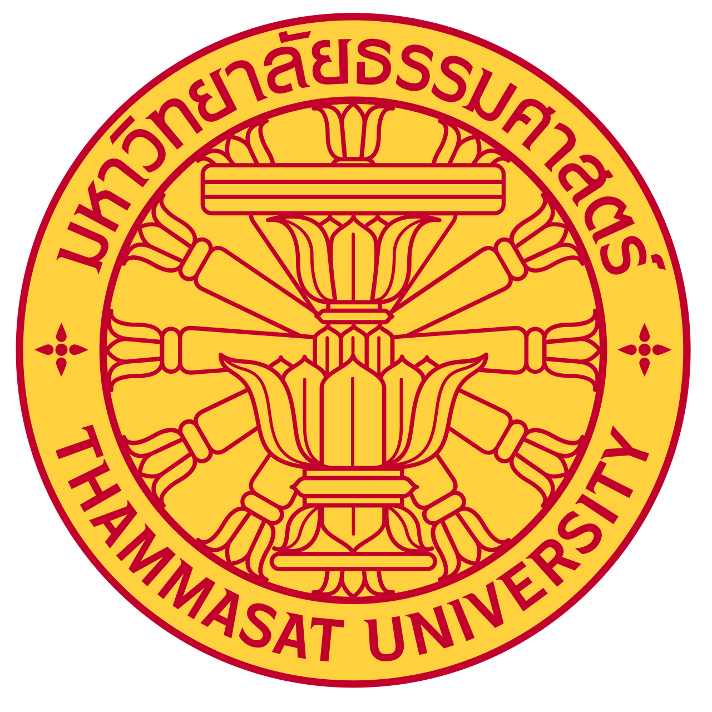

ฉันมีความตั้งใจที่จะศึกษาต่อคณะพยาบาลศาสตร์ เพราะอยากนำความรู้และความสามารถของตนเองไปช่วยเหลือและดูแลผู้อื่น ฉันเป็นคนที่ชอบเรียนรู้ ค้นคว้า และสนใจเกี่ยวกับร่างกายและสุขภาพของมนุษย์ จึงมองว่าวิชาชีพพยาบาลเป็นอาชีพที่เหมาะกับตัวฉัน
เป้าหมายของฉันคือการเป็นพยาบาลที่สามารถดูแลผู้ป่วยด้วยความเอาใจใส่ และนำความรู้ที่มีไปสร้างประโยชน์ให้กับผู้ป่วย ครอบครัว และสังคม
เลือกมหาวิทยาลัยธรรมศาสตร์ เพราะเป็นมหาวิทยาลัยที่มีสภาพแวดล้อมและการเรียนรู้ที่ช่วยพัฒนานักศึกษาให้มีทั้งความรู้ ทักษะ และความรับผิดชอบต่อสังคม หากได้รับโอกาสเข้าศึกษา จะตั้งใจเรียนและพัฒนาตนเองอย่างเต็มที่ เพื่อก้าวไปสู่การเป็นพยาบาลที่มีความรู้ ความสามารถ และมีจิตใจที่พร้อมดูแลผู้อื่น